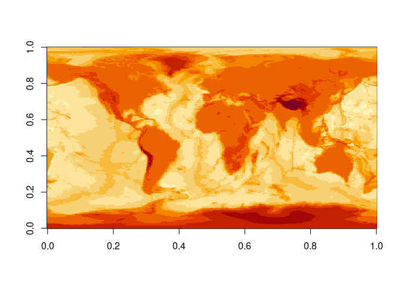
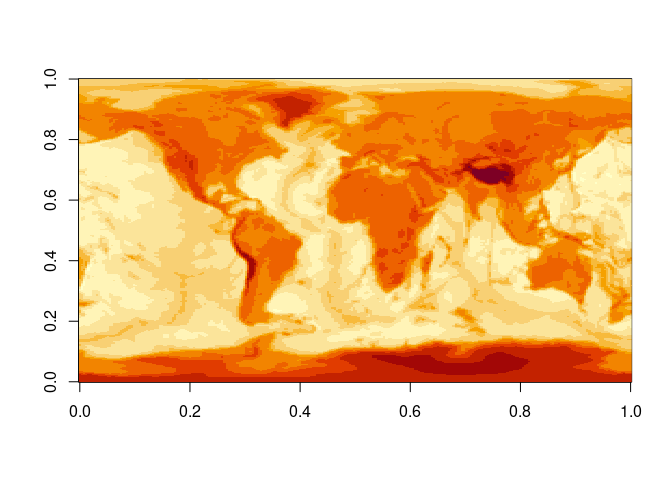
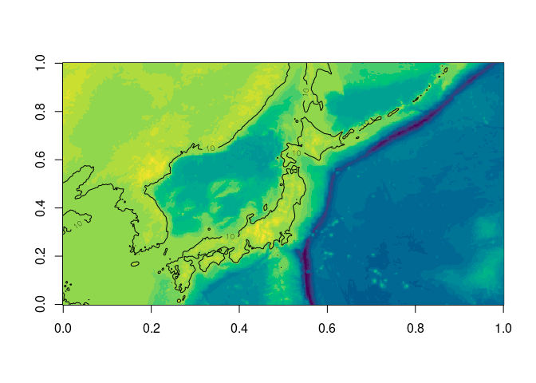
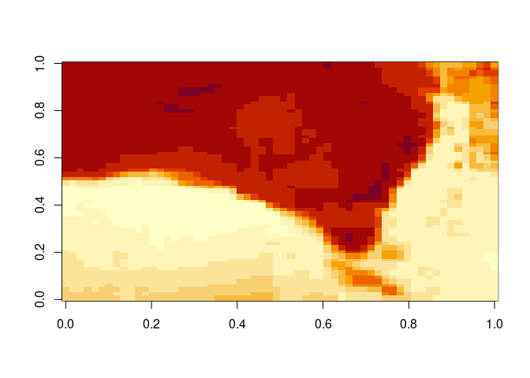
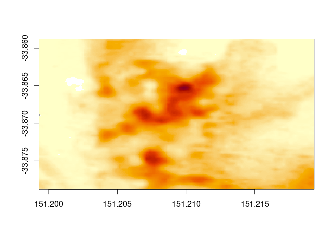
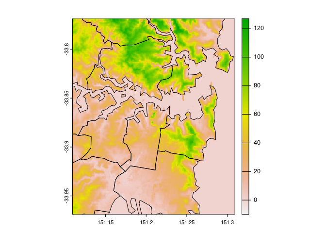
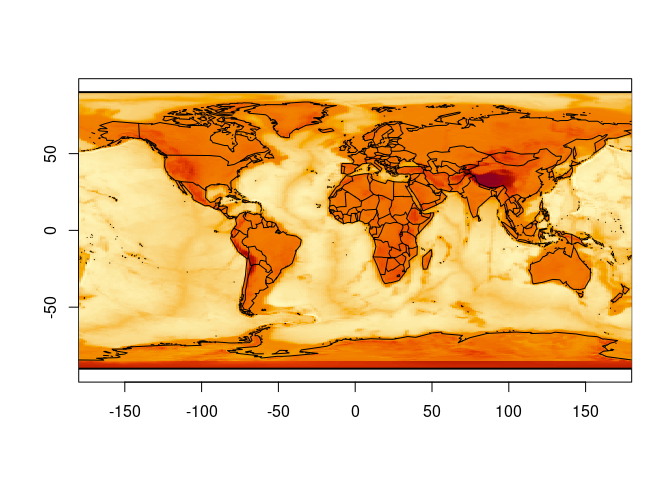
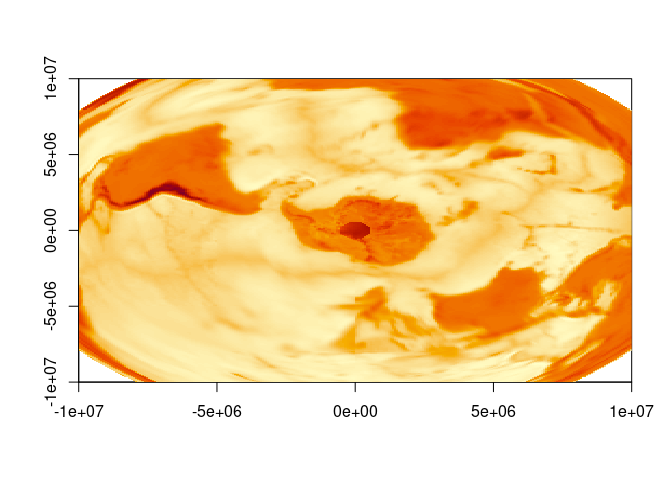
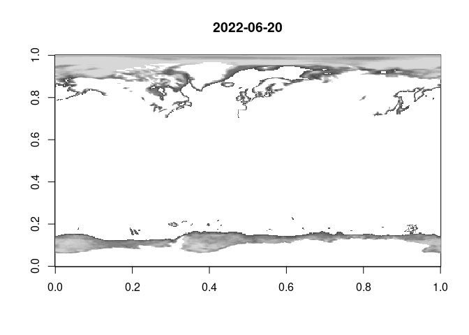

The goal of whatarelief is to obtain elevation data.
Installation
You can install the development version of whatarelief from Github with:
remotes::install_github("mdsumner/whatarelief")Get elevation data
Whole planet by default, specify an extent to hone this, use ‘dimension’ and ‘projection’ for more custom options.

image(x0 <- elevation(extent = c(120, 160, 30, 50)), col = hcl.colors(24))
contour(x0, add = TRUE, levels = 10)


image(elevation(extent = c(-1, 1, -1, 1) * 5e6, projection = "+proj=lcc +lon_0=-85 +lat_0=-42 +lat_1=0 +lat_2=-30"))
Can use a raster object.
elevation(terra::rast())
#> class : SpatRaster
#> dimensions : 180, 360, 1 (nrow, ncol, nlyr)
#> resolution : 1, 1 (x, y)
#> extent : -180, 180, -90, 90 (xmin, xmax, ymin, ymax)
#> coord. ref. : lon/lat WGS 84
#> source : memory
#> name : lyr.1
#> min value : -7155.458
#> max value : 5314.292
template <- terra::rast(terra::ext(c(-1, 1, -1, 1) * 5e6), crs = "+proj=lcc +lon_0=-85 +lat_0=-42 +lat_1=0 +lat_2=-30", ncols = 1024, nrows = 1024)
r <- elevation(template)
r
#> class : SpatRaster
#> dimensions : 1024, 1024, 1 (nrow, ncol, nlyr)
#> resolution : 9765.625, 9765.625 (x, y)
#> extent : -5e+06, 5e+06, -5e+06, 5e+06 (xmin, xmax, ymin, ymax)
#> coord. ref. : +proj=lcc +lat_0=-42 +lon_0=-85 +lat_1=0 +lat_2=-30 +x_0=0 +y_0=0 +datum=WGS84 +units=m +no_defs
#> source : memory
#> name : lyr.1
#> min value : -7925.619
#> max value : 5596.563
terra::plot(r)
Works down to quite high resolution.
pt <- c(151.2093, -33.8688)
ex <- c(-1, 1, -1, 1) * 0.01 + rep(pt, each = 2L)
elev <- elevation(extent = ex)
#> [1] "SRTM in use, in addition to GEBCO"
image(elev, zlim = c(0, max(elev)))
Similar example, but a bit more context so we can easily see that it’s “correct”, by respatializing!
ex <- c(-1, 1, -1, 1) * 0.1 + rep(pt, each = 2L)
elev <- elevation(extent = ex)
#> [1] "SRTM in use, in addition to GEBCO"
image(elev, zlim = c(0, max(elev)))
contour(elev, levels = 5, add = TRUE)
We can “re-spatialize”, but no special functionality is added we just use the available tools.
library(terra)
#> terra 1.5.21
template <- terra::rast(terra::ext(ex), ncols = dim(elev)[1L], nrows = dim(elev)[2L], crs = "OGC:CRS84")
plot(setValues(template, elev[, ncol(elev):1]))
plot(sf::st_cast(ozmaps::abs_ced, "MULTILINESTRING"), add = TRUE, col = "black")
Note that all the information we need is present, we provide the extent, and the result has a dimension. (Longitude/latitude is assumed if sensible, else there’s a warning - but the code will run what you ask of it). Provide all the information extent, dimension, projection to get a controlled result, or use a raster or terra object to store these.
Custom sources
We can provide our own sources of elevation.
Use the ‘source’ argument to elevation(), you can input multiple sources so that a higher resolution one has a fallback to a lower resolution one, note that by default we have “GEBCO 2019”, then “NASADEM” in the sources. It doesn’t matter what projection or extent these have, but usually a higher resolution one should be listed after lower.
For example, this string provides the Amazon compute S3 elevation tiles, an ‘XYZ’ image server that has geotiff elements but is not a georeferenced online service (hence this small bit of XML to wrap it up).
aws <- "<GDAL_WMS><Service name=\"TMS\"><ServerUrl>https://s3.amazonaws.com/elevation-tiles-prod/geotiff/${z}/${x}/${y}.tif</ServerUrl></Service><DataWindow><UpperLeftX>-20037508.34</UpperLeftX><UpperLeftY>20037508.34</UpperLeftY><LowerRightX>20037508.34</LowerRightX><LowerRightY>-20037508.34</LowerRightY><TileLevel>14</TileLevel><TileCountX>1</TileCountX><TileCountY>1</TileCountY><YOrigin>top</YOrigin></DataWindow><Projection>EPSG:3857</Projection><BlockSizeX>512</BlockSizeX><BlockSizeY>512</BlockSizeY><BandsCount>1</BandsCount><DataType>Int16</DataType><ZeroBlockHttpCodes>403,404</ZeroBlockHttpCodes><DataValues><NoData>-32768</NoData></DataValues><Cache/></GDAL_WMS>"Using this, we can obtain a global summary of the available data. Sadly, these data are not quite global.
m <- elevation(source = aws)
image(seq(-180, 180, length.out = nrow(m)), seq(-90, 90, length.out = ncol(m)), m, asp = 1)
maps::map(add = TRUE)
abline(h = c(-90, 90), lwd = 2)
image(elevation(extent = c(-1, 1, -1, 1) * 1e7, projection = "+proj=laea +lat_0=-90", source = aws))
But, we can fall back to our GEBCO 2019 source to fill the gap even with a custom source (note we can provide any number of sources, in any mix of extents and projections and resolutions).
gebco <- "/vsicurl/https://public.services.aad.gov.au/datasets/science/GEBCO_2019_GEOTIFF/GEBCO_2019.tif"
m <- elevation(source = c(gebco, aws))
image(seq(-180, 180, length.out = nrow(m)), seq(-90, 90, length.out = ncol(m)), m, asp = 1)
maps::map(add = TRUE)
abline(h = c(-90, 90), lwd = 2)
image(elevation(extent = c(-1, 1, -1, 1) * 1e7, projection = "+proj=laea +lat_0=-90", source = c(gebco, aws)))
Properties of the sources in use
See vignette elevation-sources.
Note that, we could use any raster data of any kind here as custom ’source’s … (we’re figuring out how to frame this package in general terms, that aren’t too “spatial”).
Experimental features
We are working out some ways of accessing data used by the raadtools project.
Please don’t rely on them.
library(whatarelief)
files <- raad_source("nsidc_25km_seaice")
names(files)
#> [1] "date" "north_vrt_dsn" "south_vrt_dsn"
idx <- which.max(files$date)
mat <- elevation(source = unlist(files[idx, c("north_vrt_dsn", "south_vrt_dsn")]))
brks <- quantile(mat[mat <= 250 & mat > 0], seq(0, 1, length.out = 16))
image(mat, col = grey.colors(length(brks) - 1), breaks = brks, main = files$date[idx])
Code of Conduct
Please note that the whatarelief project is released with a Contributor Code of Conduct. By contributing to this project, you agree to abide by its terms.